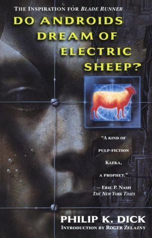

Before Neo was pulled out of the Matrix, before the First Corporate War, before Molly looked after Case, an android thought about dreams of sheep.
The origins for the cyberpunk genre are often overlooked. Most people couldn’t tell you where the term “cyberpunk” came from, but there is more to both the term and the genre than the label. As with most new terms, the spirit and idea precede the name. Before Bruce Bethke penned the short story Cyberpunk in the early 1980s, coining the term, a prolific science fiction writer living in the San Franscisco Bay area published a book that would capture the minds of Sci-Fi fans for decades.
"A merry little surge of electricity piped by an automatic alarm from the mood organ beside the bed awakened Rick Deckard."
Philip Kindred Dick published Do Androids Dream of Electric Sheep in 1968. It full encapsulated everything that would become the defining aspects of the cyberpunk genre – identity, perception, human nature, and the nature of reality along with the well-known near future techno-dystopian struggles of society. But even Androids had its influences. Other works like George Orwell’s Nineteen Eighty-Four has some elements that influenced other writers from a dystopian perspective. However, nothing really kickstarted things like PKD’s proto-cyberpunk novel.
In 1982, an ex-pat turned Canadian was sitting in a theater watching Ridley Scott’s latest film. At some point he realized that Blade Runner was so close to the novel he had been writing that he was going to have to rewrite nearly three-quarters of it. So that’s what he did.
William Gibson published Neuromancer two years later to high critical success, winning the three biggest awards for science fiction at the time: Hugo, Nebula, and Philip K. Dick Awards (known as the “triple crown). Two more novels followed to complete Gibson’s Sprawl Trilogy. But it was Neuromancer that established all of the aspects of this “new” genre. He called it “speculative science fiction.”
Bathke published his story in 1983, a year before Gibson’s first novel, so he able to get the idea of “cyberpunk” out before Gibson could get out “speculative science fiction.” I’m sure the marketing departments liked the shorter and more marketable term better as well.
Mike graduated with a Bachelors of Arts in graphic design and a Bachelors of Science in behavioral psychology. After watching Blade Runner, he took his degrees and a love for table top gaming and created one of the more influential pen and paper games, Cyberpunk in 1988.
The Pen & Paper Role Playing Game and its successors – Cyberpunk 2020, Cybergeneration, and Cyberpunk Red – heavily influenced aspects of counter culture. Terms like “choom” and “corpo” have had a resurgence in popularity due to the eventual success of CD Project Red’s Cyberpunk 2077 video game. While people have been getting together for decades to play games such as the ,Dungeons & Dragons, ,Warhammer, and Magic: The Gathering, it was R. Talsorian’s most well-known title that coined the phrase “Friday Night Firefight.”
For other gamers, a different title would influence them and drive those who were intrigued to look for “evidence” of government conspiracies around every corner. All because one man with the initials J. C. had to make a decision.
Warren Spector wanted to create a game that allowed players to choose the destiny of their character for many years. Deus Ex, was the fruition of that dream, and, for many fans of the cyberpunk genre, on of its highest peaks. Not only could do practically whatever you wanted to do, but the games narrative was driven by every conspiracy theory ever created. Nothing was off the table and it was presented in a believable manner: police states, nanotechnology, the Illuminati, the Majestic 12, Project MKUltra, and many more, all existed in the real world (albeit not as they are presented in the game). Eleven years later, the sequel Deus Ex: Human Revolution blurred the lines even more by interjecting real trans-humanism (implanting technology into the human body) and its unintended consequences.
Those who cannot remember the past, are condemned to repeat it.
One of the great aspects of story is its ability to see the future through the eyes of today. These visionaries are what some people like to call contemporary “prophets.” They ask a very important and difficult question, “Is anyone listening?” Sadly, the answer is usually a resounding “no.”
What most people get out of cyberpunk is nothing more than pop culture references, a t-shirt which says “High Tech, Low Life,” and a fun time before moving on to the next big “thing” in popular society. But if listen, really listen, to the stories and the voices of the writers, you will hear warnings about some very horrible things coming in the future. And maybe then Neal Stephenson can stop face-palming every time Mark Zuckerberg mentions the name “Meta.”
© 2025 The Gibson ARG Project